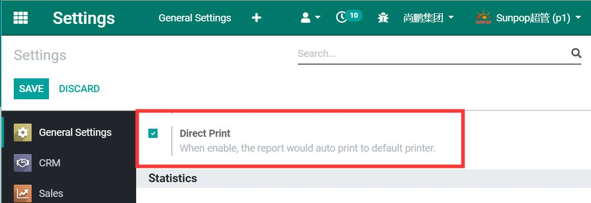
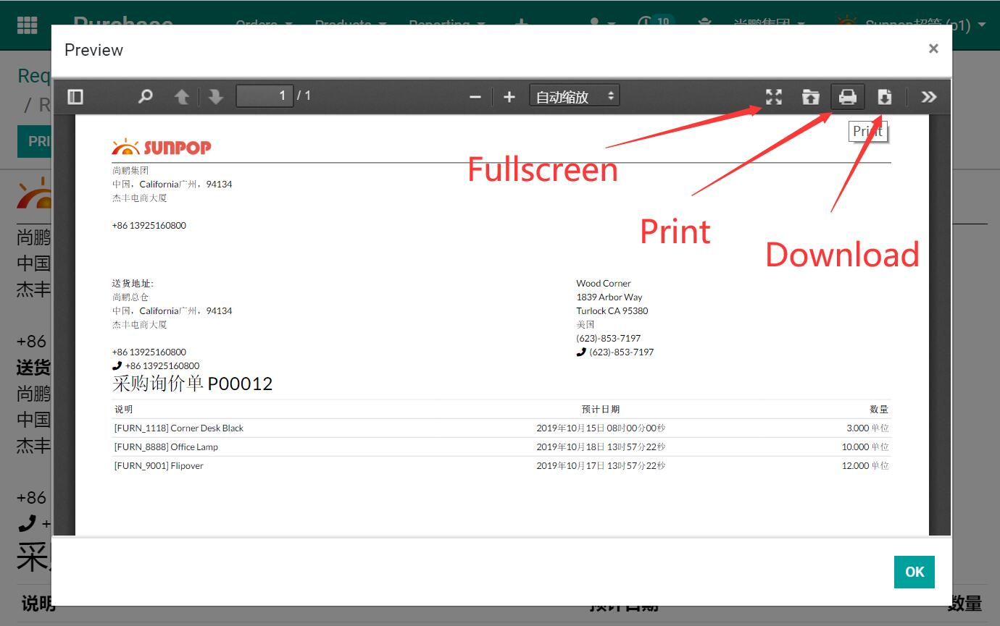

Can setup for default direct print or print after preview.

Preview Mode for pdf report

Normal report for html report

Add config at the end of chrome.exe "--kiosk-printing"
Anytime you want to use direct print, like pos. you need to start odoo from this Chrome shortcut.